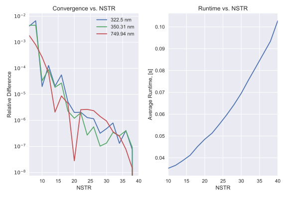
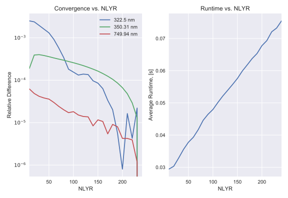
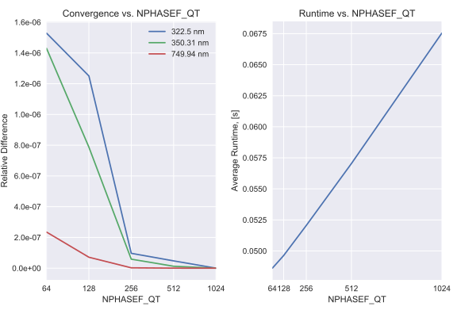

Sasktran-Disco Quick Start¶
SASKTRAN-Disco (SK-DO) is a discrete-ordinates radiative transfer model. The engine is based of the well known DISORT and LIDORT models and has been verified to agree with DISORT v2.0 to 1e-7. The vector mode of the model has been verified against the Coulsen tables, as well as various other benchmarks containing aerosol scatterers. The linearization in SK-DO is verified with numerical perturbation techniques and is accurate to at least 6 significant figures.
- Features
Scalar/vector radiative transfer computations
Scalar/vector weighting function computations
BRDF and Lambertian surfaces
Linearized with respect to most input parameters
Pseudo-spherical approximation for the solar beam, spherical line of sight corrections
- Limitations
Spherical line of sight correction is only available in scalar mode
No thermal emissions, two-stream approximations, single scatter solutions
- Strengths
Fast
Low-memory usage
Easy to use
Usage¶
Simple Example¶
The following is a simple example of how to (1) setup a basic radiative transfer calculation using the SASKTRAN framework, and (2) default configure a Disco engine.
In this example we’ll setup a single line of sight. The observer will be TEMPO and our single line of sight will be looking at the ARG office.
import numpy as np
import sasktran as sk
import sasktran.disco.interface as do
""" Geometry configuration.
First we need to configure our sk.Geometry object. This object specifies the
line of sight vectors as well as the solar position (based on mean mjd).
"""
geometry = sk.NadirGeometry()
# make the look vector from TEMPO to the ARG office
tempo = sk.Geodetic()
tempo.from_lat_lon_alt(0, -100, 35786000)
geometry.from_lat_lon(mjd=57906.843, observer=tempo, lats=52.131638, lons=-106.633873, elevations=0)
""" Atmosphere configuration.
Next we need to configure our sk.Atmosphere object. This object specifies all
atmospheric and surface properties to the engine.
"""
atmosphere = sk.Atmosphere()
# add our species
atmosphere['rayleigh'] = sk.Species(sk.Rayleigh(), sk.MSIS90())
atmosphere['o3'] = sk.Species(sk.O3OSIRISRes(), sk.Labow())
atmosphere['no2'] = sk.Species(sk.NO2OSIRISRes(), sk.Pratmo())
# add our surface properties
atmosphere.brdf = sk.Kokhanovsky()
""" Radiance calculation.
We are now ready to perform the radiance calculation. Note that the engine can
be default constructed (with properties set after construction), or the
properties can be passed to the constructor.
"""
engine = do.EngineDO(geometry=geometry, atmosphere=atmosphere, wavelengths=[350, 700])
rad = engine.calculate_radiance()
# rad now hold the calculated radiances
Radiance Output Format¶
In SK-DO the default radiance output format is as an xarray (https://docs.xarray.dev/en/stable/) object. The output is self describing and is easy to save as a netcdf object. If you prefer, you can use engine.calculate_radiance(output_format=’numpy’) to get a numpy array as output instead.
Weighting Functions¶
SASKTRAN-Disco support the same weighting function interface as SASKTRAN-HR (weighting functions are in the same form as well). Disco also supports calculations of weighting functions with respect to multiple species simultaneously and weighting functions with respect to the surface albedo. Below is an overview of the weighting function interface.
# Standard atmosphere configuration
atmosphere = sk.Atmosphere()
atmosphere['rayleigh'] = sk.Species(sk.Rayleigh(), sk.MSIS90())
atmosphere['o3'] = sk.Species(sk.O3OSIRISRes(), sk.Labow())
atmosphere['no2'] = sk.Species(sk.NO2OSIRISRes(), sk.Pratmo())
atmosphere.wf_species = 'o3' # single species syntax
atmosphere.wf_species = ['no2', 'o3'] # multiple species syntax
# calculate radiance and weighting functions
rad = engine.calculate_radiance()
Configuring Weighting Functions¶
Internally, SASKTRAN-DO ingests atmospheric parameters (number density, optical properties) on an altitude grid.
We then integrate the atmospheric parameters over each internal layer to obtain the layer quantities. Weighting
functions are returned back with respect to the altitude grid, not the layer quantities. The altitude grid
can be accessed and set through the sasktran.disco.interface.EngineDO.alt_grid() method. When requesting
weighting functions it is always recommended to use the output_format=’xarray’ option which is the default.
Advanced Configuration¶
Sasktran-Disco has four main configuration parameters which affect the accuracy of the calculation. The following are the default values of each parameter.
# Sasktran-Disco defaults
engine.num_streams = 16
engine.num_layers = 50
engine.num_brdf_quadrature_terms = 64
engine.alt_grid = np.arange(0, 100001, 500)
Below the significance of each parameter is explained and demonstrated.
Number of Streams¶
In the discrete-ordinates algorithm phase functions and the BRDF are expanded into series of Legendre polynomials. The value of NSTR is the number of polynomials used in these expansions.
engine.num_streams = 16 # default value
- Symbol:
NSTR
- Complexity:
\(O(n^3)\)
- Valid range:
NSTR = {4, 6, 8, …, 40}
- Default:
16
- Logic:
Increase with the complexity of the phase function (and potentially BRDF).
- Note:
This parameter will have the most drastic effect on runtime (and potentially neglibile effects on precision).
- Phase Functions and the BRDF Expansions
The following is how these expansions are computed.
\[p_l(\vec{x}) = \dfrac{1}{2} \int_{-\pi}^{\pi} L_l(\theta) f(\vec{x}, \theta) \ \mathrm{d} \theta \qquad l = 0, \ldots, 2N -1\]where
\(p_l\) The \(l\)’th polynomial in the Legendre expansion of the function being expanded.\(\vec{x}\) Some position in the atmosphere.\(L_l\) The \(l\)’th Legendre polynomial.\(f\) The function being expanded (phase functions or surface BRDF).- Azimuth Separation
In the discrete-ordinates algorithm the azimuth component of the resultant intensity is expanded into a cosine Fourier series. During the computation, solutions to the radiative transfer equation for different azimuth components are lazily evaluated until the solution has converged. The value of NSTR is also the maximum number of azimuth components allowed before the computation is said to have failed.
Solutions to the radiative transfer equation are reconstructed as follows.
\[I(h, \mu, \phi) = \sum_{m = 0}^{C}I^m (\tau, \mu) \cos{m(\phi_0 - \phi)} \qquad C < \mathrm{NSTR}\]where
\(I\) Intensity.\(h\) Altitude.\(\mu\) Line of sight zenith angle.\(\phi\) Line of sight azimuth angle.\(\phi_0\) Solar azimuth angle.
Number of Layers¶
In the discrete-ordinates method, the atmosphere is discretized into NLYR homogeneous slabs. These slabs are spaced in optical depth and atmospheric properties are averaged within each slab (constant through slab).
engine.num_layers = 50 # default value
- Symbol:
NLYR
- Complexity:
\(O(n)\)
- Valid range:
0 < NLYR
- Default:
50
- Logic:
Increase with optical depth.
- Note:
Reasonable values may vary from 10 to hundreds.
Number of Quadrature Terms¶
In the Number of Streams section we saw the following integral.
\[\int_{-\pi}^{\pi} L_l(\theta) f(\vec{x}, \theta) \ \mathrm{d} \theta\]
For the phase function expansion the Legendre coefficients are precomputed for the scatterers being included.
However the coefficients in the BRDF expansion are computed directly from the BRDF angular function.
The num_brdf_quadrature_terms parameter sets the number of quadrature terms used evaluated this integral numerically.
This parameter is only important if you are including a non-Lambertian surface.
engine.num_brdf_quadrature_terms = 64 # default value
- Symbol:
NPHASEF_QT, NBRDF_QT
- Complexity:
\(O(n)\)
- Valid range:
NPHASEF_QT, NBRDF_QT = {64, 128, 256, 512, 1024}
- Default:
64
- Logic:
Increase with complexity of function, \(f\).
- Note:
The integral is evaluated seperately over the intervals [-1, 0] and [0, 1].
Engine Options¶
The following are settable options in Sasktran-Disco. Properties are lowercase strings with spaces removed.
These are set your engines sasktran.Engine.options.
Keyword |
Type |
Description |
|
|
Three element unit vector pointing to the sun in Geodetic coordinates. |
|
|
Array of altitudes (in meters) which define the range of altitudes where Sasktran-Disco will calculate radiance. These are also the altitudes where climatologies will be polled. The default is |
|
|
Altitudes where weighting functions are calculated at (in meters). |
|
|
Defines the region in which the perturbation occurs. If this is set to 500 (meters) then the perturbations will occur 500m above and 500m below each |
|
|
Sets the number of streams. |
|
|
Sets the number of layers the atmosphere is discretized into. |
|
|
Sets the number of quadrature terms used in the expansion of the BRDF. |
|
|
Specifies the form that you would like the weighting functions returned in. A value of 0 return weighting function in the form \((I' - I)/\mathrm{wfeps}\). A value of 1 returns weighting in the form \((I' - I)/(\mathrm{wfeps} \times \mathrm{nd})\) where \(\mathrm{nd}\) is the species unperturbed number density (this essentially gives you contribution per molecule). |
|
|
Specifies convergence criteria. Once consecutive (2) iteration of the azimuth expansion yield contributions less than this value the solution is said to have converged. If a solution does not converge its value (radiance) will be set to |
|
|
Specifies the exact number of terms used in the azimuth expansion. The convergence criteria is ignored if this value is set. |
|
|
Singularities occur for the case where the SSA (scattering albedo) is exactly 0 or 1 (which are unphysical but nevertheless useful). If one of thse cases occurs the value of the SSA will be dithered by this amount. |
|
|
If true the engine will use a single reference point for all the lines of sight (the average of all ground-intersections), otherwise the ground-intersection of each line of sight will be used as the reference point (i.e. different reference point for each line of sight). |
About These Figures¶
Configuration¶
- Geometry
- Observer:
Geostationary satellite similar to TEMPO (location: 0N,-100E, altitude: 35,786 km)
- Line of sight:
Single line of sight looking at the ARG office in the Physics building at the University of Saskatchewan (location: 52.131638N,-106.633873E)
- Time:
3:14PM June 2, 2017
- Atmosphere
- Species:
Rayleigh, O3, NO2, and an aerosol
- Surface:
Snow (Kokhanovsky, default settings)
- Wavelengths:
2 ozone retrieval wavelengths for OSIRIS, 322.5nm and 350.31nm are optically relatively thick and thin respectively. 1 aerosol retrieval wavelength, 749.94 where the influence of the aerosol is relatively significant.
Equations¶
Someone that is familiar with the discrete-ordinates method might notice that some of the equations presented above omit some important details. This was done for the sake of clarity.